operanthouseのヘッダー
Kitaya lab
3Dプリンタのセットアップ
この章ではEnder3 Maxのセットアップの解説を行います。
もし他のプリンターをご使用の場合、Youtubeなどに解説動画があると思うのでそれを参考にして組み立てて下さい（英語の方が情報量が多いです）。
組み立て
（組み立て所要時間：約2-3時間）箱から出すとこのような感じです。では早速組み立てて行きましょう。
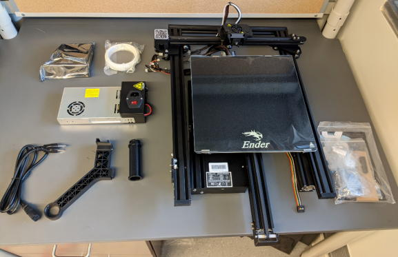
本体を組み立てて行きます。
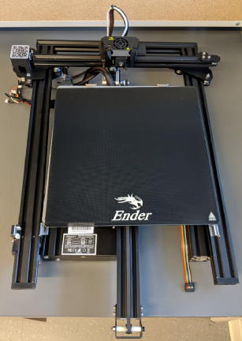
両側面に支柱を接続する場所があるのでそこに2本の支柱をレンチを使ってネジで固定してください。
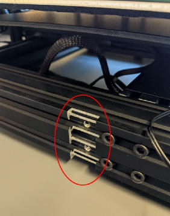
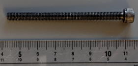
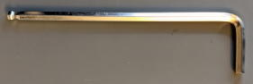
支柱が垂直になっているか確認します。
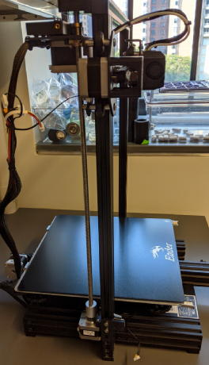
次は電源の取り付けです。
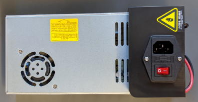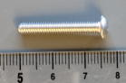
これら2か所をネジ止めします。
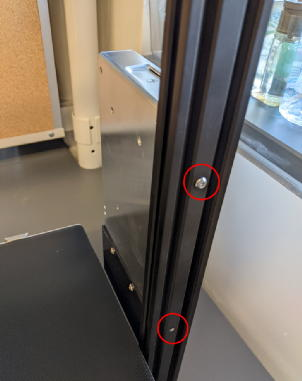
コントローラーを取り付けましょう。
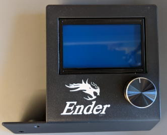
2か所をネジ止めします。
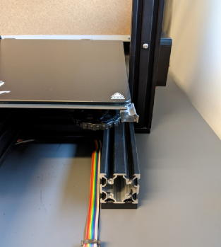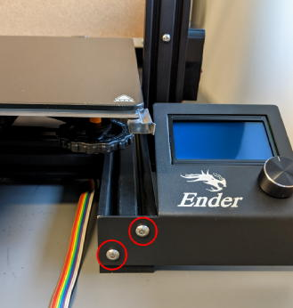
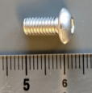
スプール軸を接続しましょう。
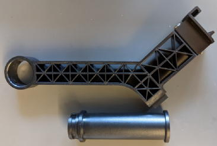
上部を引っかけてから下部を入れるとスムーズに嵌ります。
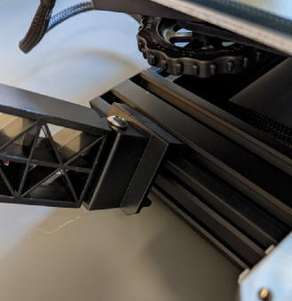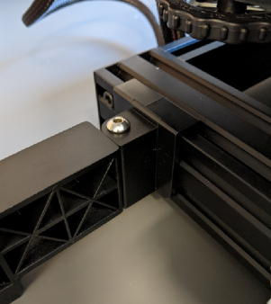
もしガラスベッドがちゃんと固定されていない場合は固定します。まず奥側をクリップにはめます。
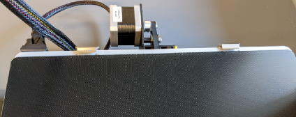
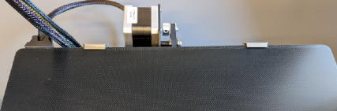
次に手前のクリップを回転させて手前側も固定します。
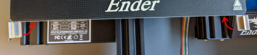
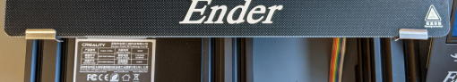
配線を各モジュールに接続します。
最初はプリンタヘッドの位置が高く作業しづらいのでZ軸を手で反時計回りに回して右の写真くらいヘッドの位置を下げます。
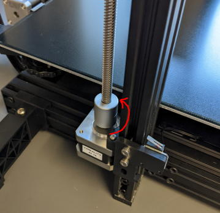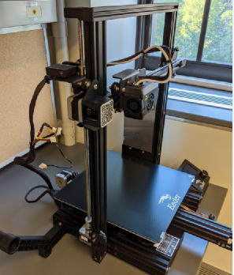
ケーブルがこのように結束されている場合はニッパーで結束バンドを切ります。
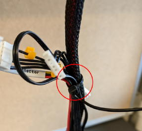
ケーブルのタグに注意しながら以下のようにしてケーブルを接続してください。
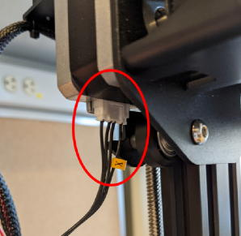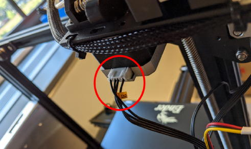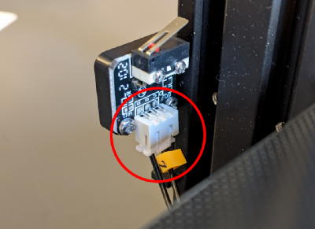
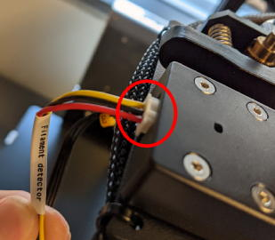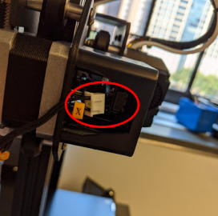
 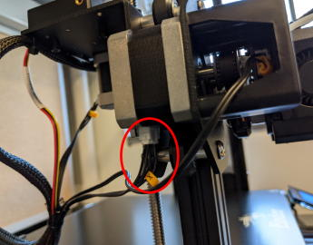
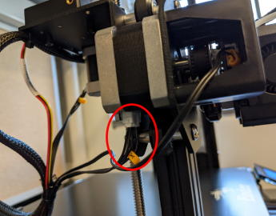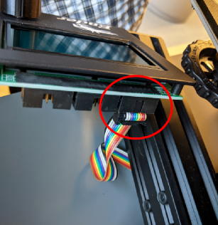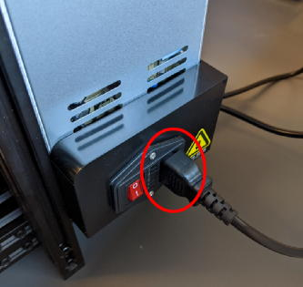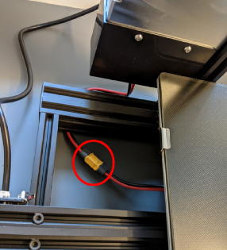
日本もしおくは米国の場合、電圧切り替えスイッチを115Vにします。
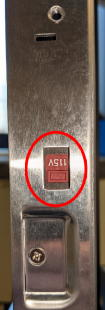
全ての接続が終わったら電源を入れてみましょう。ファンの音が聞こえて画面が表示されると思います。
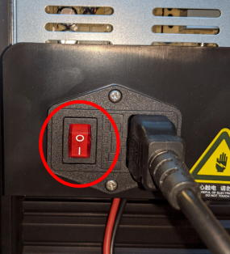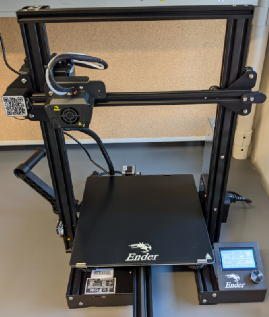
ベッドの水平取り
次に造形物を印刷する土台となるビルドベッドが水平になるように調整しましょう。まずはノズルを原点座標(Home positoin)へ移動させます。このノブを押してメニュー画面を開きます。
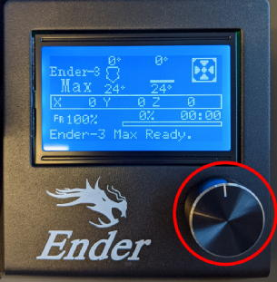
ノブを回してPrepareを選択。
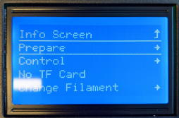
Auto Homeを選択するとヘッドが左下手前の原点へ動きます（原点はリミッタスイッチの位置で決まります）。
※この時トラブルに備えていつでも電源を落とせる体勢でいてください。
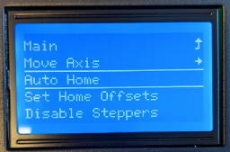
可動部がリミッタスイッチに触れることで実際のヘッドの位置をプリンタが認識します。
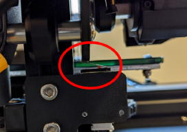
次にベッドの高さの微調整をするため、ヘッドを動かします。
今のままだとヘッドは固定されているのでロックを解除しましょう。Prepare→Disable Stoppersで解除されます。
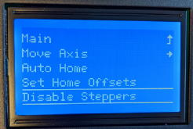
手でヘッドを左手前へ移動。
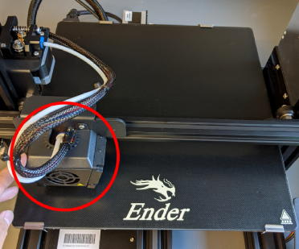
ベッドの下のハンドルを矢印の向きに回転させるとベッドが上に移動します。写真の様にノズルがある程度ベッドすれすれになるまでベッドを上げて下さい（右手前、右奥、左奥でも同様の操作を行う）。
※ノズルをベッドに擦りながら動かさないでください。
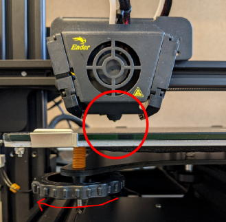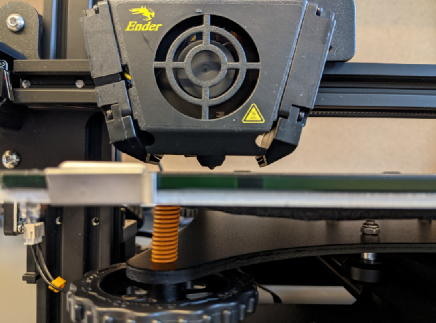
ベッドの高さの微調整を行いましょう。理想のノズルとベッドの間隔はレイヤーの厚さ（0.2mm）ですが、見た目では分からないので印刷用紙を使って調整します。
まずヘッドを左手前に持って来て、印刷用紙をノズルとベッドの間に挟み、紙を動かそうとした時に抵抗がかなり強くなるまで左手前のハンドルでベッドの位置を上げます。
次にヘッドを右手前に移動させ、同様の事をします。さらに右奥、左奥でも同じ事をします。
最後に再び左手前に戻って来た時、紙の抵抗が変わっていたら再調整し、再び調整を1周します。
全ての位置でちょうど良い抵抗になるまでこの周回を繰り返します（2,3周必要な事が多いです）。
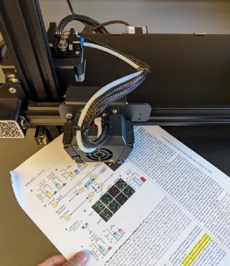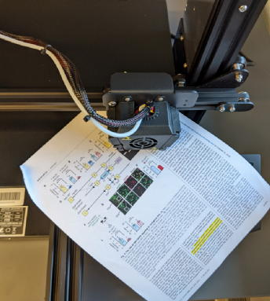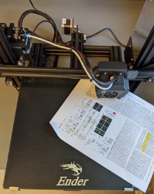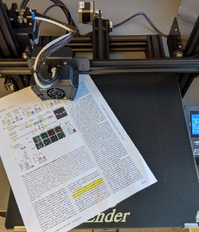
フィラメントの準備
次にフィラメントをセットしましょう。EEnder3 Maxにはサンプル用にフィラメントが付属しているので説明ではこれを使います。
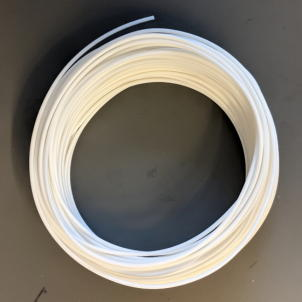
ニッパーで先端を斜めに切ります。
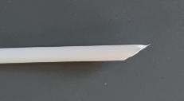
埃はノズル詰まりの原因になるので埃を除くフィルターを付けます。キムワイプで適当に巻いて外れないようにテープでとめました。
これをするとノズルの寿命が3倍以上に伸びます。
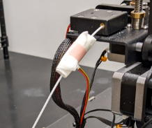
フィラメントをフィラメント切れセンサー、次いで押し出し機に通します。フィラメントがカーブして通らない場合、一度出して手で真っ直ぐにします。
押し出し機は左のハンドルを押すとフィラメントが通るようになります。

そのままフィラメントがノズルに突き当たるまで挿入して行きます。フィラメントの先端はチューブが少し透けて見えるので分かると思います。
先端はこの辺まで行きます。
フィラメントのロールはスプルー軸に引っかけておきます。
テスト印刷
今回はベンチマーク用の印刷物として広く用いられている「船」を3DプリンタモデルのアップロードサイトであるThingiverseからダウンロードして印刷してみましょう。
https://www.thingiverse.com/thing:763622
※この船は3Dプリンタが苦手なハングオーバー（アーチ状の構造など真下に支えが無い構造）を含むため、3Dプリンタの性能テストでよく使われます。
このモデルデータは単なる形状データ（ポリゴン）なのでこのままでは3Dプリンタで利用できません（3Dプリンタはどのようにヘッドを動かすかと言うデータしか受け付けません）。
そのためスライサーソフトを使って形状データ(stl形式)からどのようにヘッドを動かすかというデータ(gcode形式)へ変換する必要があります。
スライサーソフトはUltimaker CuraがメジャーなのでこれをPCにインストールしてください。
https://ultimaker.com/software/ultimaker-cura
起動するとこの様な画面が出てくるのでAdd non-networked printerを選びます。
ソフトが起動されたら印刷条件を変更しましょう。

以下のように設定します。
船の形状データ(.stl)をCura内にドラッグ&ドロップします。
船は少しサイズが大きいので船をクリック後、左のインターフェイスでサイズを50%に縮小させます。
SDカードリーダー経由でSDカードをPCに接続します。
スライスボタンを押すとgcodeデータを生成します。Previewボタンを押してノズルがどのように動くか確認します（右のバーで表示するレイヤーの高さを変えられます）。
問題がなさそうであればSave to Diskボタンを押してSDカードへgcodeを保存します。
SDカードを3Dプリンタへ差し込みます（カードは裏向きで入れる）。
ベッドに印刷物をくっ付かせるため、のりを塗ります。写真ののりは温度が高い時だけ接着力を発揮するので印刷後に印刷物が簡単に取れて重宝します。
これをベッドに塗ります。
プリンタの電源を入れ、ダイアルをプッシュし、Print from TFを選択
船のgcodeデータを選択。これで印刷が開始されます。
ベッド→ヘッドの順に加熱され、その後印刷が始まります。
ベッドの加熱は時間が掛かるので前もって加熱しておくと待ち時間が減ります。
A ベッド設定温度, B ベッドの現在温度, C ノズル設定温度, D ノズル現在温度
ノズルが設定温度になったらヘッドが動き始めますが、この時印刷の成否を決める重要さ作業があります。
3Dプリンタで一番良くある失敗の一つに印刷中に印刷物がはずれてしまう事が上げられますが、その原因はノズルの隙間が大きすぎて最初の層がちゃんとベッドに付いてない為に起きます。
ノズルの隙間を最も正確に見極める方法は印刷中のフィラメントのトレースを観察する事です。
（A) もし下の写真の様にトレースが不透明で肉厚がある場合ノズルの隙間は大きすぎです。断面は右図のようなイメージです。
 ←フィラメントがある程度冷えてからベッドに触れており、あまりベッドやのりに食い込めていない。
←フィラメントがある程度冷えてからベッドに触れており、あまりベッドやのりに食い込めていない。（B） それに対して下の写真のように半透明でフィルムのように立体感がないトレースだと大丈夫です。
←高温で溶けた状態でベッドに触れているため、良くくっ付いている。
Ender3Maxでは印刷中にベッドの高さを変えても問題ないので、隙間が大きすぎる場合はベッドの動きを妨げないようにそっと4つのハンドルを同じ角度だけ少しづつ右に回して印刷トレースが(B)の写真のように見えるようにします。
少し面倒に思えるかもしれませんが、この作業は最初に1度のみ行えば良く、その後はノズルを変えるまで基本的にノズルの隙間は変わりません。また慣れればとても簡単に出来る作業です。
トレースが良い感じになったらやる事はないので3Dプリンタから離れても大丈夫です。印刷が終わってベッドが冷えたらニッパーを使って造形物を取り外しましょう。
印刷物でチェックするべき点は以下の2点です。
- 青で示したハングオーバー部位の形が崩れていないか
- 船の甲板に隙間が見えないか
問題が無ければセットアップは無事完了です。